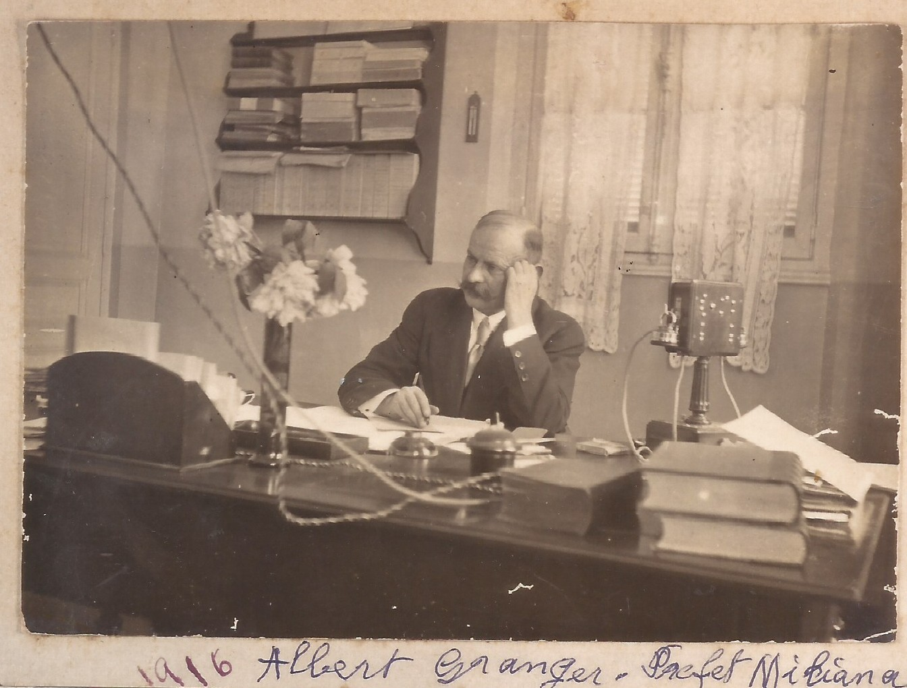
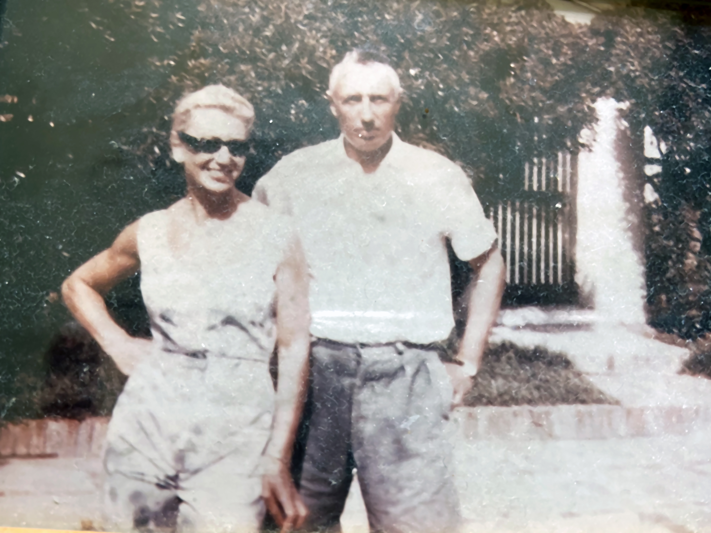
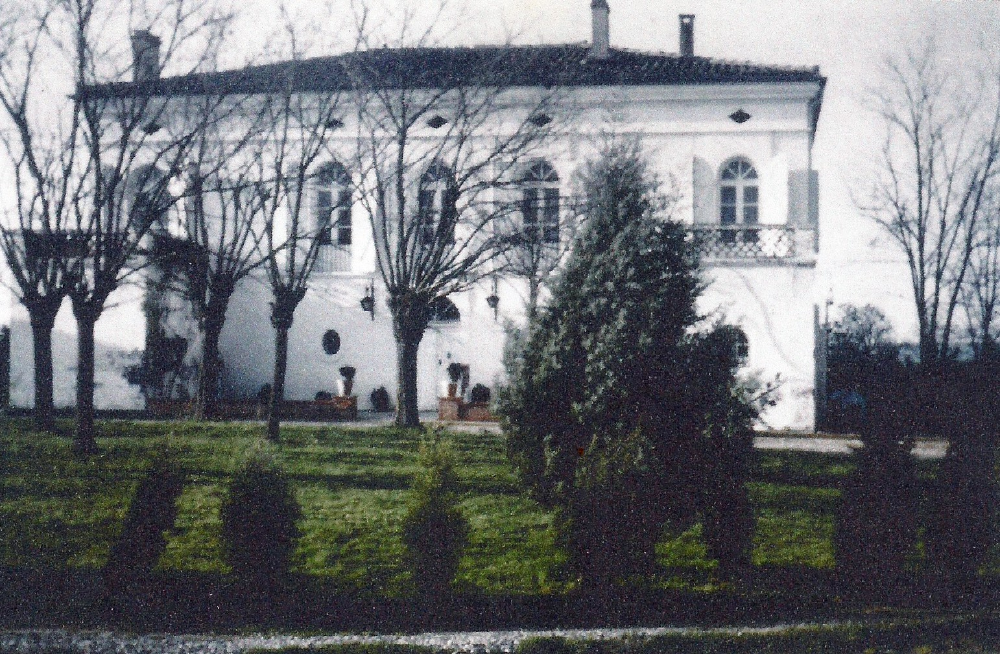

« C'est seulement à partir des années 1860 que je peux vous parler des Nôtres. »
Côté Prosper DURAND(Grand'père de René)
Son père était agent de change à Lyon. Quand il a beaucoup trop misé sur les sucres il a tout perdu, et là, il a pris la décision de rembourser et quitter Lyon avec ses livres.
Il avait une belle bibliothèque. Un oncle lui avait avancé 100 F, et en 1860 environ, il est parti s'installer dans le 1ᵉʳ Quartier Européen d'Alger, rue Dumont D'URVILLE où il a ouvert un cabinet de lecture.
Prosper et sa sœur avaient une douzaine d'années. C'est en bateau à voiles que Prosper a été passer son baccalauréat à Lyon avec Warot dont le père était dans les Bois (Entreprise). Inutile de vous dire qu'ils ont été collés tous les deux.
Portrait I : Prosper DURAND
Studio P. Vollenweider-Borgeaud, 2 Rue Dumont d'Urville à Alger.
Et c'est ensuite que Prosper a monté son affaire de charbon. Au début, il livrait ses sacs à bicyclette. Vous savez qu'ensuite c'était la plus grosse affaire d'Alger. Import, export avec l'Angleterre et autres pays, grâce à sa flotte de bateaux. Il s'est beaucoup serré toute sa vie, même quand il avait réussi et il avait une très grosse fortune.
Il avait épousé une THOMARON, famille de six enfants. Elle avait à peine 16 ans, originaire de Paris. Elle racontait toujours que le jour de son mariage, c'est elle qui s'occupait d'habiller son petit frère Pierre THOMARON qui avait trois ans.
Le Grand'père Prosper a fait 7 ans sous les drapeaux. Il a assisté à la bataille de l'ALMA contre une révolte arabe. Il est mort de vieillesse à 84 ans. Il était franc-maçon de la Grande Loge, mais a demandé un enterrement religieux. Grand'mère s'appelait Antoinette. Ils habitaient une belle maison mauresque dans la montagne de St Eugène, derrière chez nous.
✦ ✦ ✦
La Branche FINE(Ferdinand, Henri & Léonie)
« Pour les FINE je sais peu de chose, car ils sont tous morts très jeunes. »
Portrait II : Ferdinand FINE
Directeur de la Banque de l'Algérie à Tlemcen.
Le Grand'père Ferdinand était directeur de la banque de l'Algérie à Tlemcen. Il a épousé une TREMERELLE d'Oran où ils avaient de belles propriétés. Mais le Grand'père vers 40 - 42 ans a eu un cancer à la gorge ; on lui a fait une trachéotomie, cela l'a un peu prolongé. Il est enterré à Alger au Bd Bru, sans tombeau.
La Grand'mère, à la fin de sa vie, n'avait pas de retraite, c'est Prosper DURAND qui l'aidait ainsi que son fils.
Henri FINE (père de René), très jeune sous-directeur de l'Agriculture, a été à trente-cinq ans Directeur des Travaux Publics.
Pendant la guerre de 1914 il a attrapé la gale, et surtout une furonculose qui l'a emporté en 1919. Il avait épousé Léonie DURAND, ravissante, et qui était votre Grand'mère, la maman de René. Papy Maurice GRANGER l'aimait beaucoup, comme une amie rieuse et qui lui enlevait un peu sa grande timidité.
✦ ✦ ✦
Branche GRANGER & Souvenirs d'Alger(Albert, Charles & la Grande Poste)

Albert GRANGER (1916)
À son bureau, Préfet à Miliana.
Albert & Charles GRANGER
Portrait des deux frères.
La Grande Poste d'Alger
Carte postale d'époque de la capitale.
✦ ✦ ✦
Côté Charles GRANGER & Les MOROSOLLI(Grand'père de Anne-Marie)
Ils sont arrivés à peu près au même moment que les DURAND et les SIMIAN, originaires de Marseille et Arles.
L'arrière Grand'père GRANGER a eu l'idée de faire des routes dans ce pays neuf. Il a monté une Entreprise de travaux publics. Au début ce devait être une toute petite entreprise. Mon grand' père l'a agrandie. Elle a été surtout développée par Papy Maurice après la mort de son père. Ils sont morts assez jeunes, l'arrière Grand' père d'un cancer à l'anus, et quant au père de Papy je n'ai pas eu d'explication sur sa mort.
« Ce que je sais, c'est qu'il avait aussi le sang chaud et qu'il avait provoqué un gars en duel, car il ne le pensait pas digne de demander sa soeur en mariage. Cela à l'épée, et le malheureux a été traversé. »
« Très digne, au lever du jour, il rentrait poser son épée et ses gants disant à son fils Maurice qui avait huit ans: "tu sais mon petit, ça fait un drôle d'effet de transpercer un gars". »
─ Voilà, c'était une époque un peu folle. Il est mort assez jeune.
Maurice GRANGER (Papy Maurice)
Père d'Annie, développeur des Entreprises de travaux publics.
Cécile GRANGER née MOROSOLLI (Mine)
Épouse de Papy Maurice, originaire de Lugano.
Famille MOROSOLLI
Photographie de groupe de la famille Morosolli.
Son fils Maurice (père de Annie) a épousé Cécile MOROSOLLI. La famille MOROSOLLI est rentrée dans la famille GRANGER avec le mariage de Mine (Cécile) à Papy. Ils s'adoraient. J'ai encore des lettres qu'ils s'écrivaient pendant la guerre. Mine m'a gardé celles où elle m'attendait. Le Grand'père MOROSOLLI et son père ont construit des immeubles dans Alger - au moins 12 à 15 - avec beaucoup d'appartements. Ils étaient venus de Lugano. Maman disait toujours Suisse Italienne et elle avait raison. J'ai vérifié.
Il y a eu six enfants: cinq filles et un garçon, Antoine qui a fait ses études d'architecture à Paris. Il a construit le 96 rue Raynouard, où vivent les MARQUAND, cousins aussi des GRANGER.
Annie FINE née GRANGER
Fille de Maurice et Cécile.
René FINE
Fils d'Henri Fine et Léonie Durand.
Annie & René FINE
Le couple réuni.
« Enfin voilà tout ce monde de notre cher passé est enterré à Alger. »
« Alger, notre pays. »
« Ici, nous ne serons jamais vraiment chez nous. »
La génération qui est arrivée à Alger a dû avoir des moments très durs pour réussir. Je le réalise maintenant que je peux me rendre compte de ce qu'a été ce retour en France.
✦ ✦ ✦
Mariage & la Vie à El-Biar(1938 - 1942)
Dans la journée, j'allais à l'hôpital. J'aimais bien exercer mon métier d'infirmière, sauf quand les gars de la chambrée me faisaient rougir par leurs réflexions. J'étais si jeune et ils n'étaient pas très malades. Des ictères dans le 3ième régiment de zouaves! Donc, prise de sang pour chacun, envoyée au laboratoire pour trouver le virus. J'ai vu là mon premier mort. Une fois, tout de même, à la visite avec le médecin Chef FABREBOULE, diagnostic d'un typhus sur un magnifique tabor marocain. J'ai dû changer de vêtements pour les envoyer à la désinfection. Lui-même est parti aux "Contagieux", en pleurant de nous quitter. Je n'étais pas très fière lorsque, quelques jours plus tard, j'avais 39° de fièvre qui n'était due heureusement, je l'ai su après, qu'à une crise de colibacille. Je me croyais déjà avoir le typhus.
Papy nous fait construire la villa d'El-Biar. Nous nous y installons au printemps 1942. J'attendais un autre bébé. En août, mariage de Mauricette et Armand. Je fais la réception à El-Biar, mais étant trop près de la naissance, je n'assiste pas à la cérémonie. Ma Dachou arrive donc le 23 août: une petite brunette toute mignonne de 3 kg. Voilà la petite famille à El-Biar.
Pour Papa René des ennuis d'essence, donc gazogène pour les autos. Il nous fait une congestion pulmonaire. Enfin, après trois semaines de repos, tout rentre dans l'ordre.
Nous arrivons au 8 novembre 1942. De la fenêtre de notre chambre, à travers les pins nous voyons des balles traçantes sur le port d'Alger. Papa pense à un exercice militaire et ne change pas son projet de partir à Staoueli retrouver le Gérant Domenech. Ils descendent tous deux à Sidi Ferruch et là ils comprennent que c'était le débarquement des Américains. Ceux-ci se moquent bien d'eux avec leur gazogène et leur donnent de l'essence.
Mais il y a eu un temps d'incertitude. L'armée, sous les ordres de Vichy s'est mise à combattre les Américains. Une période trouble. Boulevard Gallieni des soldats français prêts à tirer sur les Américains! Papa et Georges (mon beau-frère) les persuadent de laisser leurs mitraillettes et dit que c'est inespéré ce débarquement. Nous étions tous fous de joie.
✦ ✦ ✦
Les Années de Ouargla & les Événements de 1945(1942 - 1945)
Ce que nous n'avions pas envisagé, c'était que peu de temps après il y a eu un nouvel ordre de mobilisation. Pour Papa se fût Ouargla.
Ouargla! Trois années où j'ai pu avoir un mari qui avait enfin des heures régulières de bureau, et à 18 heures nous étions ensemble. Dans le privé cela ne se passait jamais ainsi. Nous étions peu ensemble, il était sur les fermes. J'ai eu la chance de pouvoir en camion-citerne faire des séjours prolongés à Ouargla. Il n'y avait que les mois trop chauds que je n'affrontais pas, un peu pour les enfants et je dois dire que je souffrais beaucoup de cette chaleur..
Pauvre Papoute! Lui il devait rester. Les permissions étaient rares. Il faisait fonction d'officier de police judiciaire à l'annexe. A cette occasion il avait pas mal de renseignements surtout en 1945 où la révolte couvait.
Anecdotes de Ouargla
Un jour, il interroge un nomade qui avait abusé - je ne me souviens pas de qui - , et en parlant il lève le bras, de son burnous il tombe du soufre. Alors Papa continue de l'interroger et celui-ci lui dit qu'on en trouve beaucoup dans la forêt pétrifiée. Papa fait un rapport à Paris pour essayer d'avoir du soufre pour l'agriculture. Réponse de Paris: "Que cet officier se mêle de ce qui le regarde!" Et maintenant ce sont les nappes de pétrole d'Hassi Messaoud.
Une fois aussi il reçoit la visite des filles du quartier réservé, complètement outrées. Le Colonel VIGOUROUX ne voulait plus les voir passer à la sortie de la Messe au retour de la visite médicale. Réponse des filles: "Pour qui il nous prend le Colonel, pour des putains?"
Papa a aussi eu le renseignement qu'un trafic d'armes se faisait, remontant du Sud vers le Nord. Là aussi on lui a demandé d'étouffer l'affaire.
Après le débarquement de 1942 nous nous sommes réinstallés à la ferme avec Armand et Mauricette car Alger était bombardé toutes les nuits. Armand a aussi été rappelé, après Papa comme médecin militaire. J'ai gardé Mauricette qui attendait Fanette. Sentant le moment venir, elle a accouché à Alger, sous une pluie de bombardements et de la terrasse de Staoueli l'on pouvait voir l'embrasement de la DCA.
Nous sommes rentrés sur Alger car Papa a été nommé au Gouvernement Général. Notre passage à Sétif avec une mauvaise voiture s'est fait 48 heures avant la grande révolte des arabes qui ont assassiné beaucoup de Français.
La répression a été terrible. Mais il y a eu une dizaine d'années tranquilles à la suite de cela, jusqu'au moment de la Toussaint 1954, date de l'assassinat des instituteurs français. Voilà, je me rappelle que nous avons entendu ces informations à Staoueli où nous venions passer un week-end. Papa était atterré. Là, il a tout à fait pris conscience de ce qui nous attendait par la suite.
✦ ✦ ✦
Épreuves, la Famille & la Ferme(1945 - 1950)
Je passe un peu vite sur les événements. Par exemple, en rentrant de Ouargla, nous vîmes que notre villa était réquisitionnée par les officiers Anglais. Nous voulions nous y réinstaller. Deux Italiens (prisonniers) étaient là, au service des Anglais. Ils nous signalent que l'officier Anglais était tombé en mer avec son avion. Aussi nous avons repris les lieux.
J'attendais Jean-Marie. Les Italiens sont restés à notre service, c'était parfait. Mais la guerre n'était pas encore finie!
Notre Nanot était très grand dès la naissance. C'était une joie d'avoir une si belle famille. Le pédiatre pour nos enfants était Robert ARNAUD BATTANDIER. Les Arnaud sont devenus de grands amis, ayant des enfants un peu du même âge. Comme j'étais sécurisée de l'avoir souvent! Il faut dire que trois enfants cela a souvent des ennuis.
Nanot n'a pas eu de chance avec son eczéma à six mois. Il a fait une telle poussée que nous avons cru le perdre. Mais heureusement, comme me l'avait prédit SÉZARY, professeur de dermatologie à Paris, ami de l'oncle Marcel: "À deux ans il n'aura plus rien". En effet c'était un beau petit garçon rieur, blond platine.
Et puis j'achète une petite voiture Simca, d'occasion, au prix de 1000 F. Mais comme je devais faire radiographier les enfants qui avaient tous les trois la coqueluche, Papa préfère me laisser la 202 pour descendre en ville. Pas de jardin public. À cause de la coqueluche, Armand me demande quelque temps avant de les radiographier. Je décide d'aller au-dessus d'Alger "les 4 canons", dans les eucalyptus, pour tuer le temps.
Et c'est l'accident. J'ai pris un risque, mais le chauffeur du camion serait passé s'il n'avait pas braqué à gauche. Je n'ai heureusement pas perdu conscience, mais j'avais l'impression d'être dédoublée. Ne pouvant plus bouger depuis la taille. J'ai fait arrêter une camionnette; les Arabes ont été sensationnels, prenant les enfants sur le plateau arrière. Ils étaient tous en blanc, hélas couverts de sang. Il a fallu me sortir, me porter dans la cabine avant où je me tenais sur mes poignets. Je ne souffrais pas encore. Comme l'on voulait m'amener à la caserne, j'ai demandé la clinique LAVERGNE. Là, j'ai pu demander Etienne CURTILLET, donner le numéro de téléphone d'Armand pour qu'il prévienne René, et ensuite la douleur m'a emportée. Je ne me souviens plus de rien. J'avais le col du fémur, le bassin, le fémur fracturés.
Après l'opération où j'ai bien failli "y rester", je me suis retrouvée dans une chambre, sans forces pour parler, mais j'entendais mon petit garçon jouer dans la chambre à côté.
Mes petites chéries étaient chez Mauricette: Marie avec sa langue coupée par son appareil et Danielle défigurée par un coup sur le haut du nez.
Une nuit, grand branle-bas. Papa et Pierre emmènent Nanot à la clinique BARBIER Hugo. Dans une quinte de coqueluche il avait fait un œdème; il fallait agir vite.
Horrible ce mois chez LAVERGNE, avec les poids au bout de ma jambe, mes souffrances et mon angoisse pour Nanot.
Pauvres tous qui passaient d'une clinique à l'autre, avec toute l'inquiétude pour Nanot!
Quand l'on m'a autorisée à sortir, j'ai voulu aller à BARBIER Hugo, encore immobile sur un lit et avec quelles souffrances!
Là, je voyais mon petit qui n'avait pas retrouvé tout de suite la parole. Il avait tout oublié. C'est là que j'ai promis de ne jamais le quitter, quoi qu'il arrive. C'était le vœu s'il vivait, car j'y crois. Doucement le sourire est revenu et ensuite quelques mots, mais combien d'angoisse j'ai ressentie! Jean-Marie a vite récupéré.
Au troisième mois nous sommes rentrés à El-Biar, moi toujours sur un lit et pour Nanot nous avions pris une nurse Allemande.
Elle ne faisait rien pour l'aider à récupérer. Finalement c'est un ménage mi-Arabe mi-Français Kaddour et Louise qui se sont le mieux occupés de lui. Il a récupéré, tout réappris, et moi j'ai pu marcher avec des cannes, six mois après.
Quel cauchemar, ce 29 juin 1949, jour de mon accident!
Mais tout à l'heure j'étais déjà en 54, donc vous voyez la vie avait repris. Oui, je crois aux vœux que l'on fait. Papa aussi en 39 avait fait le vœu de ne plus fumer s'il retrouvait son frère dans la défaite en France. Il n'a jamais cassé son vœu.
Encore une anecdote: en 1945 Papa a retrouvé la ferme dans un état épouvantable. Le Gérant Robert DOMENECH avait tout laissé à l'abandon. Il nous avait volé des moutons et des tas de choses encore, même des effets dans la maison. Papa m'a alors fait choisir entre les propositions suivantes: "Ou l'on vend et l'on part en France, ou bien l'on retrousse les manches et l'on recommence après beaucoup de courage et de sacrifices." Je n'ai pas eu le courage de tout quitter, surtout notre famille.
C'était notre pays. C'est à ce moment-là que Papoute a créé les orangeries, qu'il a cherché de l'eau en creusant des tas de puits. Il faisait fonctionner le pendule. Une fois il a fait l'imprudence de descendre au fond d'un puits très profond, il n'avait plus la force de remonter et personne ne savait qu'il avait eu cette idée géniale! Il n'en était pas très fier après.
✦ ✦ ✦
Les Années 1950 - 1962 & « Pinsaguel »(1950 - 1962)
Voici tout une époque de 1950 après mon accident, jusqu'à 1962 fin de la guerre Algérienne que l'on a pas vue passer.
Nous sortions beaucoup entre amis. Nous avons fait la connaissance des MELIA et de leurs amis. Les événements devenaient de plus en plus tragiques. Il y eût le vol de mes bijoux, sans doute par Mohamed, le mari de ma Zorah que j'aimais bien.
Dans tous ces bouleversements Papa nous fait une appendicite grave avec péritonite. Un mois de clinique avec l'angoisse! Delon (la nurse) était venue garder les enfants, car après le vol le ménage arabe était parti, Mohamed étant arrêté.
Pendant tout le mois de clinique, je n'ai pas quitté Papa. En sortant fin juin-début juillet, Mauricette nous a pris quelque temps à Sidi, mais nous retournons vite dans la villa d'à côté que nous louions tous les ans.
Tante Louise GRANGER fait une hémiplégie. J'allais très souvent à St Eugène passer un moment près d'elle. Toujours un caractère très jeune à 83 ans, malgré son infirmité. C'était ma marraine. Je l'aimais beaucoup.
Nous partons en France en 1956, sur la demande de nos amis MELIA-LEBON pour acheter une propriété. Papa était encore fatigué et ça a été un gros effort pour lui de réaliser l'achat de "Pinsaguel" qu'il jugeait une très belle affaire. Voilà, il a créé soixante-dix hectares de pommiers, c'était splendide. GUELL était le régisseur.
En 1957, c'était la naissance de Titou. Paulette LAVERGNE m'a assistée et accouchée sans douleur. Il y avait le couvre-feu à cette époque, donc elle a provoqué l'accouchement. Tout s'est très bien passé, et j'ai joué à la poupée avec un bébé facile. Mais Nanot nous fait un ulcère à l'œil. L'ophtalmologiste d'Alger, Jean FOISSIN, un ami, le laissait traîner sans trop savoir quoi faire. Un changement d'air en montagne devait le guérir. Comme en raison des Fells-agas il n'était plus question d'aller dans la montagne près d'Alger, nous sommes partis avec Danielle et Nanot à Font-Romeu, laissant le bébé de 9 mois aux domestiques sous la surveillance de Marie-Hélène. Comme il souffrait de plus en plus en montagne, j'ai pris la décision de partir à Lyon voir un grand ponte, le professeur PAUFFIC.
Danielle a repris l'avion sur Alger, et nous, le train pour aller à l'hôtel Place Belcourt où le Professeur avait son cabinet.
Nous avons pu être reçus grâce à la secrétaire qui était Pied noir. Il lui a donc brûlé son ulcère, à plusieurs reprises. Le pauvre chéri souffrait le martyre.
Enfin voilà le retour à notre cher Alger. Les événements de Mai 1958. Une merveille de folie et d'espoir. On vivait intensément.
Je ne vous ai peut-être pas dit que, comme Papa rentrait tard le soir très souvent, sinon toujours, après le couvre-feu, je montais près de Papy et Mine. Que cette vie de famille que Papy avait organisée était douce!
Maintenant je dirais dans ma solitude qu'elle était presque irréelle. Tous les matins, Papy venait prendre le petit déjeuner avec nous. Merci d'avoir connu ces années de bonheur.
Nous passions nos étés à Sidi Ferruch. Nous avions acheté une villa avec l'aide de Papy et d'Armand. J'ai remboursé Armand avec la première indemnisation, je ne voulais pas lui devoir. Mais Papy était de plus en plus fatigué. Il venait tout de même nous voir avec son chauffeur.
En août 59 c'est moi qui descendais à El-Biar et après une nuit de prémonition, un rêve, un cauchemar je n'ai plus voulu rester à Sidi. Comme j'ai eu raison! Papy, en quelques jours nous a quittés, c'était le 6 septembre. Je ne peux exprimer mon chagrin. Il m'aimait, je l'aimais. C'était mon pilier, tout s'effondrait. Là, Papa m'en a voulu. Il ne comprenait pas. Lui, ayant perdu ses parents très jeune il n'a pas ressenti ce manque de présence que l'on a après le départ d'un être que l'on ne quittait pas.
« Pour aujourd'hui, c'est bien là tout mon chagrin. Tout me le rappelle, je voudrais tant le faire revivre. Mon pauvre amour. Nous avons eu ces dernières années merveilleuses, si près l'un de l'autre. »
✦ ✦ ✦
Mariage de Marie & les Années Sombres(1959 - 1961)
La même année que le départ de Papy il y a eu le mariage de Marie et Marcel. J'étais très motivée par les préparatifs, mais si inquiète pour Papy que je ne savais pas si je pourrais faire la réception à la Maison. Marie était ravissante dans sa robe si légère, l'on aurait dit une petite fée! Peu de temps après elle a eu Christophe.
Marcel était mobilisé pour son service dans la guerre d'Algérie. Il a fait une très belle guerre: deux ans et demi. Marcel a été blessé, ma petite Marie, des abcès au sein, part avec le bébé et le retrouve dans un hôpital à Souk Ahras. Bien jeune est Marie pour commencer les épreuves.
À cette époque Danielle sortait beaucoup, elle avait un groupe d'étudiants en médecine pas tout à fait inoffensifs pour l'époque de l'OAS! Ce n'était pas rassurant, mais l'on ne pouvait pas l'empêcher de vivre sa jeunesse. Elle a connu aussi un gars du Rocher Noir (stratège politique) qui ne comprenait rien, par exemple ses pneus crevés etc...
Et puis, c'est l'espoir fou avec le putsch de CHALLE: quatre Généraux prennent le pouvoir. Ils ont été trahis par la France et de GAULLE leur a volé dans les plumes.
Le moral des troupes retombe à zéro. Les attentats contre les colons Français en Algérie se renouvelaient sans arrêt. Il ne se passait pas une semaine où nous n'enterrions un ami. Papa décide alors de me faire partir avec les enfants.
✦ ✦ ✦
L'Exode vers Toulouse & les Retrouvailles Familiales(1961 - 1962)
J'ai pleuré toute la nuit en espérant que Marie ne voudrait pas quitter son mari, et que le projet tomberait à l'eau. Non! elle était terrorisée je crois, et nous avons pris un avion pour Toulouse.
Dans ce même avion il y avait un grand blessé de guerre, aveugle, avec sa femme qui le guidait et le rassurait. Il ne comprenait pas pourquoi ce départ. C'était horriblement triste.
Les choses m'ont été facilitées parce qu'il y avait "Pinsaguel" avec les GUELL, et que j'avais déjà acheté Marens, un peu contre la volonté de Papoute et avec l'argent de la vente de Lachiffa. Mine nous a un peu aidés et elle a retenu cette avance sur une autre affaire d'immeuble qu'elle a eu la chance de vendre à Alger, avant l'indépendance.
Je devrais arriver à notre retour en France. Pour le moment je n'ai guère envie de revenir sur cette lutte du retour. Plus tard! peut-être! Ce que je sais, c'est que les dix à douze années à la retraite que nous avons vécues ensemble ont été merveilleuses. Quelle douceur de se pencher l'un sur l'autre.
Papa disait, et cela ne me faisait pas très plaisir: « C'est pas que l'on s'aime, mais on ne peut plus se séparer ». Il était si gai. Nous riions si souvent ensemble. Maintenant je ne sais plus rire. J'aimais son humour si spontané. Il trouvait que tout ce que je faisais était formidable. Comme je voudrais l'embrasser encore et surtout qu'il me sente.
Nous retrouvons une Famille en France
Il s'agit de ROBINS, banque de France ─ Les MESTRES, et à Toulouse les BAZEX et ALMAYRAC. Il fallait remonter au Général LAPASSET.
Une anecdote :
Une demoiselle LAPASSET femme du Général LACROIX a donné le bras pour le mariage du Prince ANNAM pour remplacer sa famille. El-Biar où nous avons vécu si heureux en famille! Les villas, le petit immeuble étaient sur le terrain du Prince d'ANNAM, planté d'immenses pins, avec la vue sur la baie d'Alger.
✦ ✦ ✦
La Reconstruction & Les Vergers(Marens, St Jory & Immobilier)
Il faut que je repasse nos années de retour en France. Malgré l'adversité je garde l'impression merveilleuse de cette complicité que je ne partageais pas à Alger dans les affaires.
Le début du retour, avec les allées et venues sur Alger, c'était un peu fou et risqué à chaque voyage. Nous avons essayé de sortir le maximum avec encore les loyers d'El-Biar qu'il fallait essayer d'aller chercher. Cela nous a bien aidés.
Papa a vendu ses vins et Georges lui a passé l'argent. Enfin nous ne manquions pas d'argent grâce à tout cela, en attendant les Vergers.
Papa s'est beaucoup battu pour les prêts afin de créer Marens et St Jory. Il descendait du tracteur, se changeait et allait à la Préfecture, toujours si beau. L'on ne pouvait pas imaginer en le voyant, splendide avec son manteau beige, qu'il faisait alors des travaux agricoles si durs, qu'il n'avait jamais fait précédemment. Il a donné vingt cinq ans de sa vie en activité agricole. Après, nous avons eu la sagesse de prendre des appartements.
Qu'en reste-t-il? Nous les avons donnés aux enfants ils les ont revendus. Nous aussi nous avons vendu la rue de la Balance après avoir eu de gros ennuis avec un locataire. Avec toutes les mésaventures que nous avons eues avec les locataires, il y aurait un roman à écrire. Maintenant je trouve cela folklorique, mais que de contrariétés!
✦ ✦ ✦
Mémoires & Dernières Pensées(1993 - 1996)
Le 6 juin 93, je reste seule. Actuellement il m'est très pénible de parler longuement de ce jour.
Après une période de lourde peine, il me semble que mon esprit est moins confus, mes gestes un peu plus sûrs. Et pourtant, pour un mieux momentané je retrouve cet immense chagrin avec les larmes et la gorge serrée.
Nous étions si heureux ensemble. C'était sécurisant et cette douceur affective de pouvoir se pencher l'un sur l'autre. Mon pauvre Amour. Je pleure et cela ne te fait pas revenir, je voudrais tant te faire revivre!
J'ai conservé les deux studios et le T3 à gérer. Pour le moment, cela m'occupe et puis ce ne serait pas le moment de vendre.
Mon but, si j'y arrive en raison de mon âge et de ma santé, c'est d'attendre que Jean-Marie s'organise. Il a vendu un terrain et va donc construire un hangar, ensuite il arrangera sa maison et si je sens que je peux y habiter, alors seulement j'envisagerai de vendre Marens. Mais encore quel chagrin. Comment vais-je supporter cette mutation? Je crois bien que mes vertiges n'étaient que le résultat d'une déprime. La conjonctivite m'a empêchée de passer le premier Noël avec mes enfants. Si vous saviez comme il me manque, cela fait huit mois, j'ai hâte que les mois passent encore plus vite pour m'aider.
Juillet 94. Le 15, c'était son anniversaire. Oui, j'ai toujours du chagrin, mais je me sens un peu mieux dans ma tête et physiquement.
Quand je pense à Papa je crois qu'il n'a pas été malheureux de ce retour en France. Il s'est réalisé pleinement dans les créations de vergers pour lesquels il gardait un grand espoir, et il le fallait car nous avons beaucoup travaillé.
Il avait aussi les contacts pour les rapatriés à la Préfecture, avec des personnalités. Il a toujours cultivé les relations haut placées. Et puis sa FNSEA, ses amis: AUDIGE - Président de la Chambre -, TESSEIRE - le Directeur du Crédit agricole, ou le Président CENAC etc...
Enfin je crois que le jour où il est parti, tous lui ont rendu un dernier hommage et j'en suis heureuse. Dans toute cette période de retour il s'est réalisé pleinement.
Après, bien sûr, il y a eu ses opérations successives; cela nous a beaucoup rapprochés. Les douze dernières années, nous ne nous quittions plus. Aussi cette absence a été horrible. Mais je vais un peu mieux. Pauvre chéri, crois bien que je ne t'oublie pas!
Nous avons pendant ces trente années, réalisé beaucoup de choses intéressantes: des ventes de terrains, des achats à la barre du Tribunal d'appartements, l'achat de St Cyprien qui nous a donné tant de joie. Nous y étions en amoureux. C'est si beau. Il adorait cet appartement, je le comprends car c'est exceptionnel.
En conclusion je crois que cette période de sa vie il a été très heureux.
Février 1996. J'ai pris la décision de vendre Marens 200 unités. C'est un très bon prix, en raison des réparations qu'il faut y faire: toitures, maison, bâtiments.
Cela est une dure épreuve, et ce n'est pas fini. Comme je ne sais pas si je supporterai le choc, je demande que si j'étais trop fatiguée on me laisse mourir ici. Je fais cela pour arranger et simplifier ma succession.
Sachez que j'ai eu une vie passionnante et merveilleuse, donc c'est très sereine que je partirai. Je suis très fatiguée et pas loin de la sortie; ce ne sera pas le changement qui précipitera les choses, mais la destinée.
Je ne sais si j'arriverai à cette réalisation sans mourir avant, mais si ma santé me permettait d'y arriver j'en serais heureuse. Savoir que chacun de vous aura sa maison, ses meubles, sauf Anne-Marie qui a choisi d'acheter une pharmacie. Je souhaite de tout cœur qu'elle réussisse, pourtant je n'approuve pas un tel endettement vu qu'ils ont chacun un métier.
Peut-on conseiller, à 79 ans, les jeunes qui ont tout l'avenir devant eux?
C'est un gros sacrifice de vendre Marens. Il me faudra beaucoup de courage puisque nous y avons vécu trente-cinq ans parfaitement heureux.
« Je vous aime mes chéris. Tous, réalisez votre avenir en étant aussi heureux que nous deux. »
Me voilà installée chez Jean-Marie, après la vente de Marens. J'y suis très bien et j'ai la chance de ne pas finir seule. Nanot est si attentionné, et la maison est très agréable. Mes filles sont toujours si près, mais jamais assez.
28 Juin 1996
« C'est aujourd'hui notre anniversaire de mariage. Je serai heureuse quand je serai près de lui. À côté, il me semble que nous nous tiendrons la main. Vous voyez je ne serai pas triste de partir, et je ne vous quitterai jamais. »
« Nous serons tous les deux pour veiller sur vous. Ne soyez pas tristes puisque nous serons ensemble et encore plus près de vous. »

Annie & René FINE
Souvenir d'Annie et René réunis.

La propriété de Marens
La demeure de Marens.
« Voilà, mes chéris, j’ai écrit ces quelques souvenirs de Papa, mais il y aurait tant à raconter ! Pourtant cela m’a fait passer bien des après-midi près de Lui. »
Je vous aime et vous embrasse tous,
Maman
✦ ✦ ✦
Récit d'Annie : Mes Parents & Ma Jeunesse(Maurice Granger & Cécile Morosolli)
À mes 4 enfants, en souvenir des jours heureux.
Si j'ai décidé, un jour, d'écrire ces quelques pages, c'est parce que revivre son passé me permet de vivre encore avec ceux qui m'ont quittée.
Sans existence surnaturelle serions-nous poursuivis dans nos rêves par des présences si émouvantes ? Il se peut que de leur vivant, par pudeur, nos chers disparus n'exprimaient pas leurs sentiments et qu'ils reviennent dans des manifestations touchantes à tel point que mes journées en sont comblées d'émotions.
Merci ! Merci ! À qui le dois-je ?
Mes parents, ma jeunesse
Maurice GRANGER, mon père, s'était engagé à la guerre de 1914-1918. Patriote, élevé par un père sévère, très strict sur les beaux sentiments : Honneur, Famille, Patrie.
Un de ses ancêtres avait été Jacobin au moment de la Révolution Française. Il était Franc-maçon mais il avait mis ses fils chez les curés à Notre-Dame d'Afrique. Seulement Maurice ne supportait pas l'hypocrisie et un jour, il avait sauté le mur après avoir donné une gifle à un professeur. Les conséquences ne se firent pas attendre : il fut renvoyé.
C'est avec l'aide d'un professeur d'histoire, M. Lespesse, qu'il prépara son bachot et fut reçu avec succès. Par la suite il poursuivit ses études de droit jusqu'à la licence.
C'était un grand cœur, mon père ! Timide et un peu ours.
Il tomba amoureux de Cécile et la voyait en cachette des parents dans la montagne de St Eugène, derrière chez elle, un peu avec la complicité de ses sœurs. C'est là qu'ils élaboraient des projets d'avenir ; ils étaient follement amoureux.
Hélas le père de Cécile n'acceptait pas un garçon sans situation personnelle, car il faisait marcher l'entreprise familiale que son père avait laissée, en mourant très jeune. C'est ainsi que mon père présenta un concours pour être rédacteur au Gouvernement Général.
Leur vie de jeune ménage commença avec de petits moyens dans une villa non loin de la maison familiale de Maurice. Ils eurent deux petites filles, et le couple était très heureux, quand la guerre éclata.
Pour faire son devoir, mon père s'engagea bien qu'il n'y fût pas obligé car sa mère était veuve : il pouvait être soutien familial. Mais il voulait faire son devoir avant tout. Je pense qu'ils espéraient que cette guerre finisse vite.
Ce fut l'embarquement sur les paquebots avec ces hommes qui partaient au front, les femmes qui pleuraient sur le quai. Cette mer qui les séparerait pendant X temps ! Les permissions étaient rares et les adieux touchants après s'être retrouvés.
Un certain départ, à Noël, la permission terminée, Oh ! surprise : retour inespéré de Papa. En effet, un sous-marin allemand était signalé dans la baie d'Alger. Et c'est dans ces moments d'immense bonheur et d'angoisse que je fus conçue.
Comment aurais-je pu être autrement qu'une petite fille d'une extrême sensibilité, ayant un grand besoin d'amour.
Mais la vie les sépara à nouveau. Ce furent les rudes épreuves de la guerre qui dura et qui s'intensifia. Le moral déclinait et Maurice, qui était Officier de Liaison, admirait le courage des petits « poilus » qui remontaient à l'assaut. Son frère, médecin militaire, était très inquiet pour lui qu'il adorait et admirait. Il avait une grande prestance.
Cécile, à Alger, recevait des lettres de plus en plus pessimistes et elle-même, qui attendait un bébé, était assez déprimée. Le Professeur GILLOT, qui la soignait, l'obligeait à venir le voir tous les jours, essayant de l'aider à surmonter ce spleen.
Voyant tomber sous les balles et obus les petits soldats de son régiment, mon père essaya de se faire rappeler en mission au Gouvernement Général auprès de Monsieur Henri FINE qui était un Haut Fonctionnaire : Directeur des Travaux Publics et père de René, mon futur mari.
Voilà comment mes deux parents étaient réunis quand je suis née le 23 Octobre 1917. Le fait que ce soit une troisième fille fut sûrement une déception pour eux deux. Mon père n'en laissa rien voir, au contraire il s'extasia. Une petite fille brune aux yeux bleus, si mignonne...
Cette grande affection et tendresse que savait donner mon père m'a accompagnée toute ma vie, je l'ai recherchée auprès de ceux que j'aimais. Quelle douce jeunesse j'ai vécue !
Les soirées familiales où Maman jouait du piano et Papa chantait. Je m'endormais sur le tapis du salon et quand ce grand géant me prenait dans ses bras pour me porter endormie dans son lit ; c'était si doux que je ne bronchais pas afin de ressentir pleinement ce bonheur. Parfois il leur arrivait de sortir le soir, souvent ils me retrouvaient endormie dans le couloir parce qu'il me semblait qu'ils ne m'avaient pas bien embrassée en partant.
Mes deux grandes sœurs ne s'occupaient pas de moi. Maman par contre s'occupait beaucoup d'elles deux, les accompagnant partout : comme je n'aurais pas aimé cela ! Heureusement je pouvais vivre ma vie et mon imagination était débordante.
J'avais des cousines de mon âge. Nous étions souvent ensemble chez ma grand-mère paternelle. Douce, indulgente, comment aurait-elle pu être autrement ! Après la mort de sa fille (28 ans en plein bonheur avec deux enfants) ma grand-mère, de chagrin, avait perdu sa voix. Nous la comprenions, mais c'était faible ; l'on sentait qu'elle faisait un gros effort pour parler.
Son jardin carré assez grand était notre paradis. Il y avait trois grands figuiers et au sommet de l'un d'eux j'avais établi ma dunette. J'observais les étoiles, connaissais le nom des constellations, le ciel était si pur ! De chaque côté de la tonnelle deux énormes palmiers tout autour desquels nous faisions courir des soldats de plomb dans les tranchées des palmes coupées.
Ah ! oui, avec les palmes, en nous suspendant, cela faisait ressort et c'était à celle qui irait le plus haut. Comme tous les enfants, nous imaginions que nous étions sur une île déserte ou sur un iceberg en pleine mer. Nous n'étions que des filles, alors le grand cousin Pierre VIALLET en profitait pour s'imposer. Il exigeait que le soir à la tombée de la nuit nous faisions tout le tour du jardin qui était assez grand avec des hangars mystérieux dans le fond, et que nous courrions en criant plusieurs fois : « Au voleur [...] je n'ai pas peur ! »... Nous étions terrorisées, mais il n'était pas question d'abandonner.
Quand mes parents, mes sœurs et des amis partaient en voyage, je restais chez ma grand-mère, étant malade en voiture. Je préférais ce monde imaginaire dans ce jardin, sur les toits des hangars pour voir chez les voisins. J'imagine l'angoisse de ma grand-mère qui ne pouvait pas crier, nous voyant comme des singes passer des arbres au toit et inversement. Mais un jour, ma petite cousine Simone tomba sur le dos. Étant l'aînée je me sentais responsable et quand, en lui donnant son bain, sa maman s'aperçut qu'elle avait un énorme bleu, elle ne dit rien : Ouf ! Merveilleuse petite Simone.
Mais je ne vous ai pas parlé de la maison que nous habitions. Elle était en face de celle des amis DURAND, les grands-parents de René, mon mari plus tard.
Au milieu du jardin, un bassin avec des poissons rouges et des papyrus. Et surtout deux énormes ficus de plusieurs centaines d'années.
Ah ! mais de l'autre côté, donnant sur le boulevard face à la mer, c'était une vue toujours changeante, infinie. Je restais des heures accrochée à la vitre de la véranda. A-t-on besoin de penser quand on contemple cette immensité ? C'est comme au Sahara, on se sent comblé.
Quand arrivait la belle saison nous descendions les escaliers du boulevard qui nous amenaient sur les rochers. Là, il y avait un chenal où la mer était calme et on pouvait trouver des crabes, des petites crevettes, et des petits poissons dans les creux des rochers.
Enfants, nous nagions d'un bord à l'autre. Je ne me souviens pas à quel âge j'ai su vraiment nager et me lancer vers la haute mer, mais j'étais comme un poisson.
Quelquefois l'on voyait passer une yole avec un garçon qui, pour nous, était un grand que nous ne regardions pas. Plus tard il devint mon mari.
Un jour où nous prenions notre café, Papa et moi, regardant à travers la vitre de la véranda, sans même nous dire un mot, Papa aperçut un corps qui flottait avec de longs cheveux et des sarouals. Il n'hésita pas à descendre et à se jeter à l'eau. Ce fut avec beaucoup de peine qu'il réussit à pousser cette femme sur le rocher. Oh surprise ! Il reconnut la mauresque de son chauffeur russe. Celui-ci la battait, aussi, de désespoir avait-elle tenté de se noyer.
Le nommé Riss fut fortement réprimandé et reprit sa femme ou son esclave, comme vous voudrez...
Nous avons aussi assisté au naufrage de l'hydravion de NUNGESSER qui faisait ses premiers essais. Le pilote était sur l'aile à attendre les secours, le bras ensanglanté.
Oui ! cette véranda est pleine de souvenirs.
Le soir, j'attendais inquiète le retour de mon père qui revenait de longues journées dans le sud où ses chantiers faisaient des routes.
Maman sortait beaucoup avec mes sœurs jeunes filles ; aussi restais-je avec mon merveilleux ami. Nous n'avions pas besoin de beaucoup parler.
Vous ai-je dit que ses colères étaient terrifiantes ?... Mais jamais contre nous ni contre Maman qu'il adorait.
Nos études & le Lycée Fromentin
Après l'École des Sœurs où toute petite, je pleurais toutes les larmes de mon corps, ce fut le Lycée Fromentin sur les hauteurs d'Alger. C'était l'ancien Palais du Dey.
Nous l'avons inauguré. Au jardin d'enfants où j'étais, il y avait de petites tables en citronnier et des chaises longues pour la sieste.
J'ai grandi dans ce Lycée : cadre magnifique avec son immense parc ombragé que nous traversions pour accéder aux bâtiments, sa cour mauresque intérieure bordée de colonnes, et dont les murs étaient ornés de carreaux anciens aux multiples couleurs.
Et cette esplanade qui nous servait de cour de récréation, avec ses immenses pins. Elle était bordée de créneaux qui faisaient notre joie ; en effet, nous pouvions nous y asseoir et admirer la vue sur la baie d'Alger.
J'avoue que je pensais davantage à organiser mes parties de balle au camp qu'à travailler, ce qui faisait dire à Maman que je n'avais aucun amour propre.
C'était le chauffeur qui nous accompagnait ; quelquefois il devait prendre la camionnette et mes sœurs étaient couvertes de honte, alors que moi j'apprenais à changer les vitesses. Nous étions tous dans la cabine avant.
L'expédition au Sahara & les Destins de Mes Sœurs
J'avais douze ans quand Papa, son frère et quelques amis mirent au point une expédition pour traverser le Sahara et chasser les bêtes fauves sur les bords du Niger. Mon rêve était que Papa m'amène avec lui. Pensez-vous, quelle folie !
Un mois après, ils furent de retour, et entre autre gros gibier, Papa avait tué une lionne. Pauvres petits lionceaux ! mais qu'il était fier...
Mes sœurs étaient en âge de sortir et Maman les accompagnait dans les bals. Heureusement que je n'ai pas eu cela !
André KLENE, le fils d'un ami de Papa et gros propriétaire du bled, qui avait été à la chasse avec lui, épousa ma sœur Odette dite Dody. L'idée de vivre à la campagne, de créer une nombreuse famille, poussa ma sœur vers son destin. Ils habitèrent donc Voltaire, situé dans la plaine du Chélif, dans une immense maison où ils recevaient beaucoup.
Ma sœur aînée, Manou, épousa son flirt de toujours, jeune avocat, Georges SIDER qui devint brillant. Ils habitèrent un appartement des parents, sur le boulevard Front de Mer, face à l'Amirauté. Nous allions très souvent leur porter du ravitaillement des fermes. La vue était superbe.
✦ ✦ ✦
Ma Vie de Jeune Fille & les Années de Jeunesse
Ma vie de jeune fille fut très agréable. Mon père qui avait été si sévère avec mes sœurs, me faisait entièrement confiance et me laissait beaucoup de liberté.
Je voulais être infirmière ; mon oncle qui était médecin s'y opposa : stupides préjugés... Alors, j'essayais les Beaux-Arts : dessins, peinture. Je n'avais aucun talent...
Sur le plan des garçons, j'étais une fille sérieuse, ce qui ne m'empêchait pas d'être toujours amoureuse dans ma tête. Je ne devais pas savoir faire les approches, ou j'avais un peu peur. À dix-huit ans, je refusai une demande en mariage d'un garçon qui avait beaucoup de mérites, ayant élevé ses frères et sœurs, ses parents étant décédés très jeunes. Je ne m'étais pas aperçue qu'il avait cette idée. Il dansait bien, c'est vrai, mais je ne voulais pas me marier... j'étais bien ainsi.
L'hiver, il y avait nos séjours à Chréa, où j'allais faire du ski dans ce cadre merveilleux avec ces cèdres centenaires couverts de neige. Il nous arrivait quelquefois de passer des séjours entre amis dans un chalet, garçons et filles. J'avais des chevaliers servants qui venaient s'asseoir au pied de mon lit, et, sagement, nous bavardions. L'un à droite et l'autre à gauche. Jamais il ne m'est venu à l'esprit qu'il y avait quelque chose de répréhensible. Dans la journée, par moins de dix degrés, nous allions faire du ski tandis que mes autres amies restaient flirter. Seul le sport me plaisait.
Outre le ski, parmi les sports que je pratiquais, il y avait l'aviron. Le matin au lever du jour, je prenais un passeur qui m'amenait sur la jetée où nous nous retrouvions en équipe. Nous sortions la yole et ramions dans le port d'Alger avec le soleil qui se levait et éclairait la ville entière ; c'était une féerie ! Un jour, je dus engager un peu trop ma rame (c'était très sensible), et nous voilà toutes à l'eau. Mon équipe ne dut pas me bénir, ce jour-là, mais l'esprit sportif l'emporta.
Premiers Émois, René FINE & la Cour
Comme chez chacun il y a un jour un déclic, j'ai été séduite par un beau garçon qui dansait bien tout en fredonnant les airs. Je commençais à savoir ce qu'était l'émoi. Et le succès attirant le succès, au cours d'une soirée, un ami d'enfance me dit : « Ce soir, Annie : c'est carnet de bal ! ». Carnet de bal, c'était un film du moment qui passait sur les écrans avec une jeune fille qui marquait ses danses retenues.
Je ne voulais pas me marier : je l'ai déjà dit, et comme je confiais mes sentiments à Maman, lui disant que René FINE était très attentionné, je revois encore sa colère tandis que nous étions sur le patio en haut de l'escalier, à El-Biar :
« Je me demande ce que tu attends ! » me dit-elle.
« Rien !... pour le moment je suis bien ainsi »...
Je n'ai pas ajouté, car à l'époque c'eût été inconcevable de le penser : « J'aimerais avoir un enfant et rester libre ». Non, je ne pouvais ni dire ni penser cela étant donné l'éducation que j'avais reçue.
Je voyais bien que René FINE était très gentil avec moi. Il me faisait conduire sa voiture (Citroën décapotable), il me raccompagnait après une soirée et ne me parlait de rien d'autre que des siens. Par mes parents, qui étaient de grands amis de sa famille, je connaissais toute son histoire : ayant perdu son Papa à neuf ans, il en avait beaucoup souffert, et ce fut ses grands-parents maternels qui l'élevèrent ainsi qu'Armand. Il m'attendrit.
Mais bien sûr qu'en chacun de nous veille un diable au corps, et un soir, après une soirée à Sidi-Ferruch, je rentrai avec ce garçon qui dansait bien. La grosse gaffe ! René fut terriblement vexé et confia à son ami Jacques BRUNEL qu'il ne voulait plus me revoir.
J'avais beaucoup de peine. Aussi Jacques arrangea une rencontre à Badjarah (où la famille DURAND avait créé un club de tennis : 18 courts, 2 piscines et le Club House). Après leur partie de tennis qui se jouait en pantalon blanc et Lacoste blanche (c'était la tenue obligatoire pour faire partie du Club), nous partîmes, René et moi, à Staouëli.
Après avoir fait le tour des chantiers (une plaine de pommes de terre, un immense champ de tomates etc...) ─ le gérant me dévisageait ─, nous prîmes l'apéritif dans la grande salle de la ferme. Assise sur le billard, je pouvais voir la campagne. Le retour se fit sans un mot de sa part sinon pour m'annoncer qu'il partait le lendemain pour Colmar avec la Chambre d'Agriculture.
La Vie de Garçon de René FINE
Voulez-vous que je vous parle un peu de sa vie de garçon ? Je sais qu'il avait beaucoup de succès dont j'étais un peu jalouse.
En faculté, il eut de bons amis comme Paul ROBERT (auteur du Dictionnaire), Jacques BRUNEL (fils du Maire d'Alger), etc... Le jour où il devint avocat, il s'acheta sa robe ; mais comme sa première affaire consistait à sauver la tête d'un condamné à mort (à l'époque il y avait la peine de mort), il offrit sa robe à Maurice CHINI et s'occupa des affaires familiales qui étaient très importantes.
Au bureau, il y avait un ancien commandant à la retraite qui faisait office de comptable : ce cher père GUERRARD. J'ai tout de suite été adoptée par lui.
Après sa journée de travail, René allait chez sa Grand-mère où il vivait. Il se changeait et repartait au café « Le Laferrière », pour retrouver ses amis, et aussi une amie couturière renommée. Je l'ai su par la suite. Voilà, cette parenthèse ne me fait pas plaisir, mais vous vouliez que je vous parle de Papa.
Sachez qu'il était très élégant : smoking, habit... rien ne lui manquait. Il avait acheté un hors-bord et avec son frère ils se lancèrent un jour dans la baie d'Alger. Panne de moteur. Le terrible courant les fit dériver et c'est à coups de rames qu'ils se retrouvèrent au Cap Matifou heureusement, sinon où auraient-ils échoué ?... Il était très envié par les garçons de sa génération qui n'avaient pas les mêmes facilités.
L'Annonce, le Mariage & les Débuts à Staouëli
J'attendais donc son retour de Colmar pour savoir dans quel état d'esprit il serait. Le connaissant par la suite un peu mieux, je suis sûre qu'il fit exprès de partir pour me mettre à l'épreuve. De la terrasse, je guettais les entrées de bateaux dans le port, telle sœur Anne.
Les retrouvailles se firent sur la route de Staouëli. Durant le trajet, il me raconta son séjour. Il avait fait la connaissance de mon oncle et de ma tante DAURCES de Marseille. Ils étaient très beaux et dans une magnifique voiture. Je pense que cela n'a pas été pour lui déplaire ; ensuite, tout a été très vite.
Un matin, tandis que Papa était dans son jardin je lui annonçai que j'allais me marier. Vous imaginez sa réaction. Je le vois encore lâchant la binette et me disant : « Mais, c'est une chose sérieuse, montons en parler ensemble, veux-tu ? » « Oui, je veux bien, mais c'est décidé. » « Es-tu sûre de l'aimer ? » « Oui, oui, je sais que ce sera mon mari. »
Soulagement des parents qui aimaient beaucoup cette famille et surtout qui me savaient un peu originale.
René, toujours très timide, demanda à Jacques BRUNEL de faire le premier pas auprès des parents. Sans lui, serions-nous mariés ? À moins que la destinée de chacun soit écrite. Après, il fallait que tout aille vite.
Repas de fiançailles chez sa Grand-mère DURAND. Lucie, la cuisinière, un peu jalouse, nous jeta le plat sur la table, et fut bien sûr réprimandée par Grand-mère ; elle devait être un peu amoureuse de René. Un mois après, il fallait que nous soyons mariés. Nous ne nous quittions plus. Le matin, il passait me prendre à El-Biar, et nous allions à Staouëli, à Badjarah, au bureau, toujours ensemble. Un jour, sur la piste moutonnière, il aperçut son meilleur ami, René BORRY. Tout heureux de lui présenter sa fiancée, mais celui-ci venait de recevoir une botte de foin sur le pare-brise et n'était pas de bonne humeur en la circonstance.
Il était normal de faire un mariage dans l'intimité, lui n'ayant pas ses parents. Je pense que cela fut une petite déception pour Maman. Pas du tout pour moi. Je remis une robe de cortège du mariage de ma cousine, avec une capeline. Je ne rentrai même pas au bras de Papa, car étant en retard après la Mairie, René me tenait par la main pour rentrer à l'église par le côté alors que tous les amis attendaient, les yeux tournés vers la grande porte. C'était René, toujours un peu caché...
Pour notre voyage de noces, mon oncle THOMARON nous incitait à nous joindre à eux et leurs enfants pour faire tour du monde. Je ne disais rien, et cela était très tentant. Mais il y avait la récolte à faire, les affaires à mener... enfin cela a toujours été primordial dans notre vie. Après un voyage d'une semaine à Oran, par une chaleur torride, nous sommes revenus aux affaires, habitant la ferme.
Comme nous n'avions pas d'enfant tout de suite, je me gâtais en m'habillant chez la grande couturière. Un jour, au mariage de mes amis au Saint-Georges, j'arrivai avec une robe en organza rayée noire et blanche, longue, une merveille. Je n'avais pas plus tôt passé le palier que mes amis vinrent me voir, ravis de me retrouver. Aussitôt, Papa me fit faire demi-tour et la soirée prit fin ; nous rentrâmes à la maison. Je n'eus plus jamais l'occasion de remettre cette robe magnifique : quand j'y pense, maintenant, quel gaspillage !